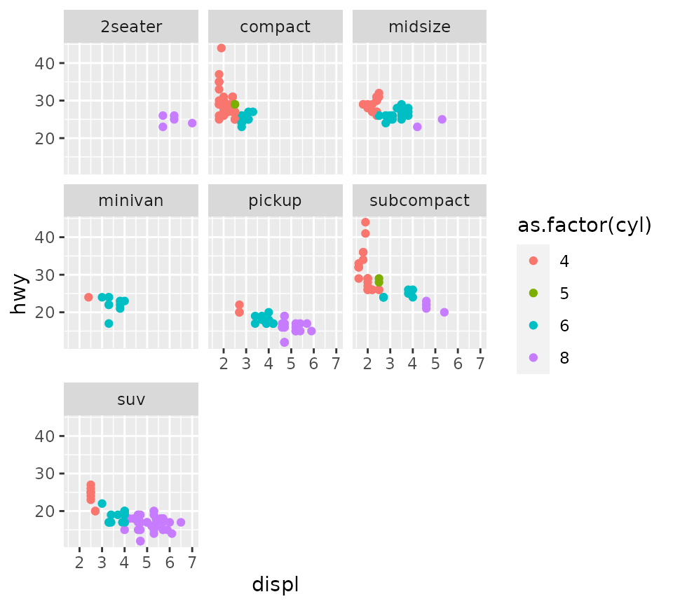
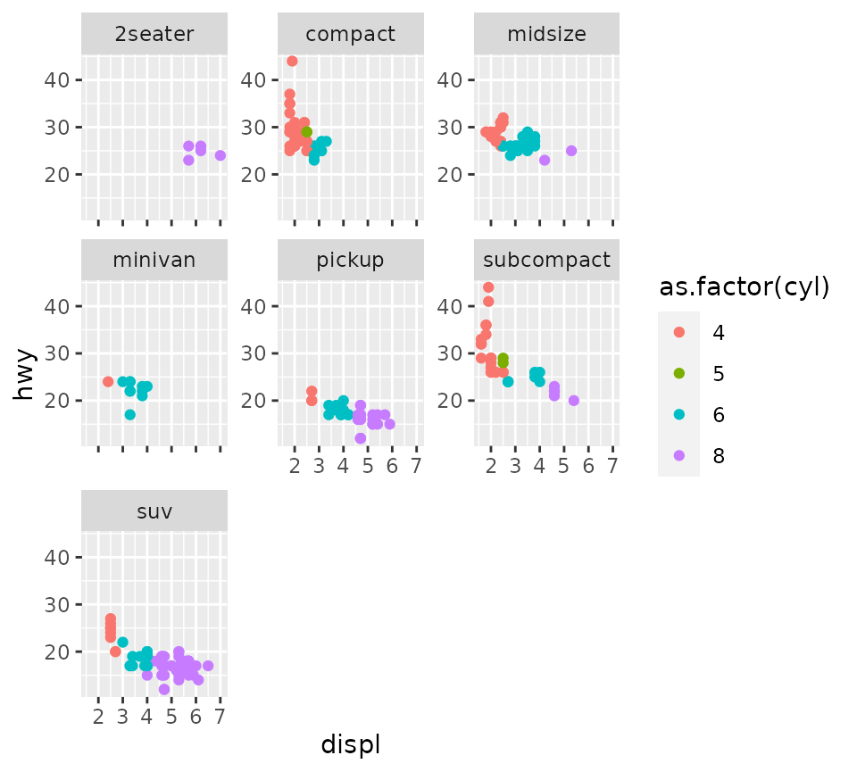
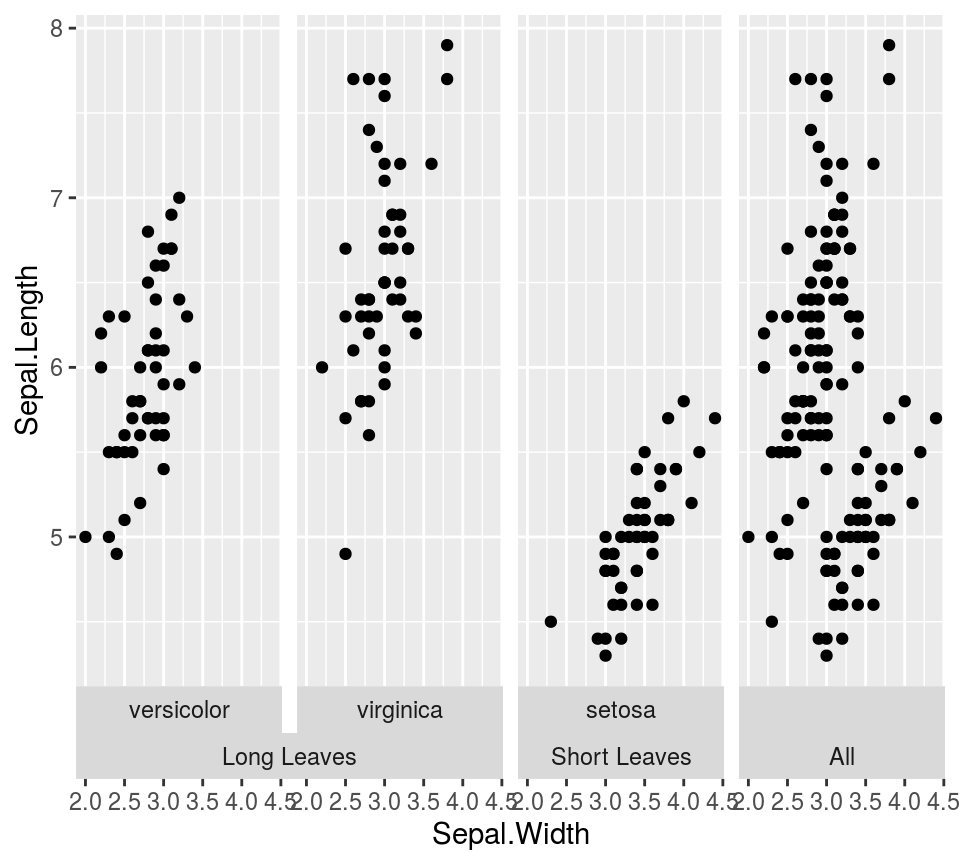
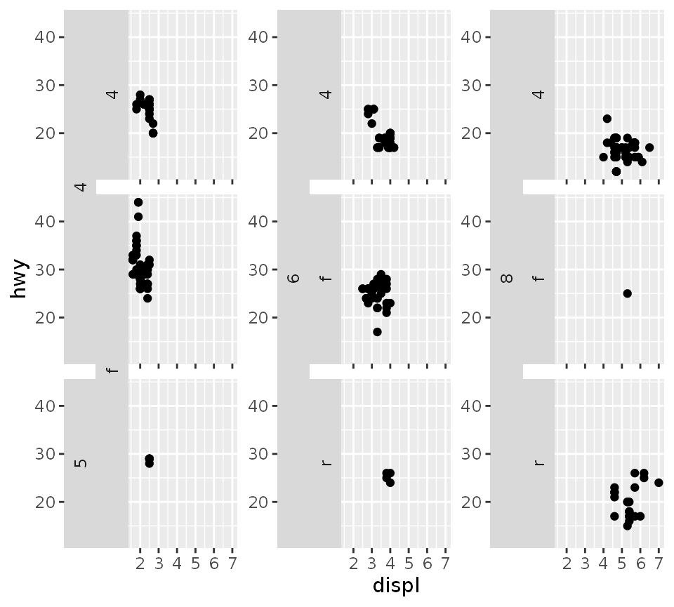
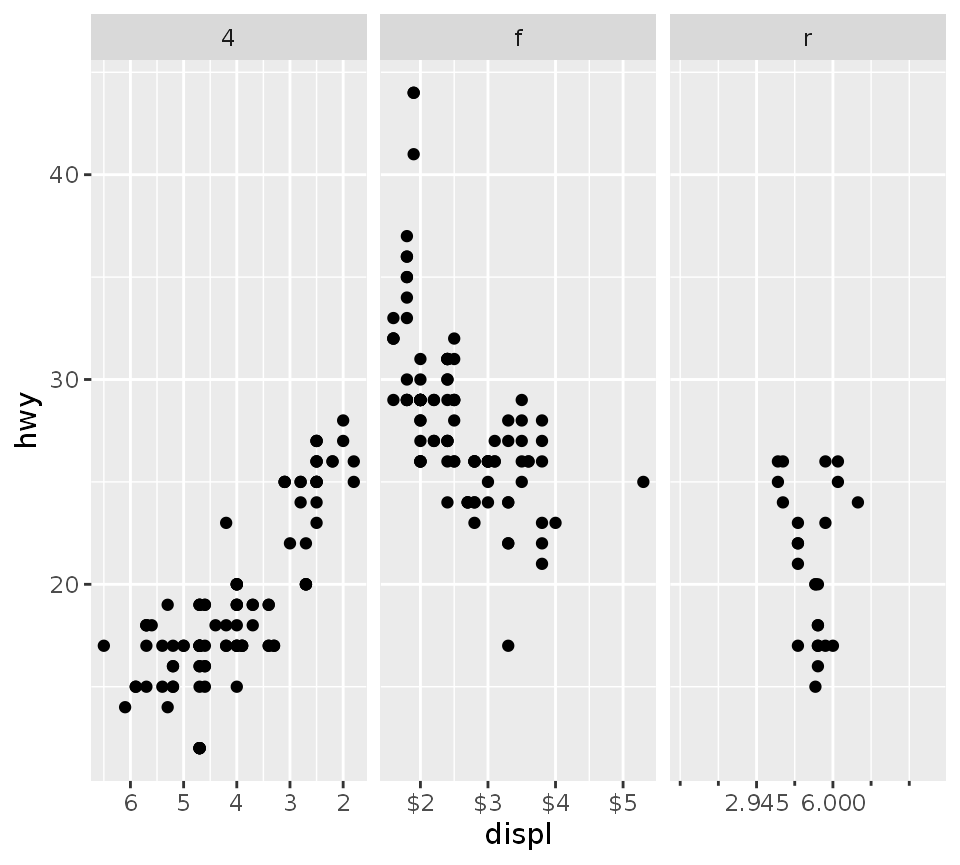
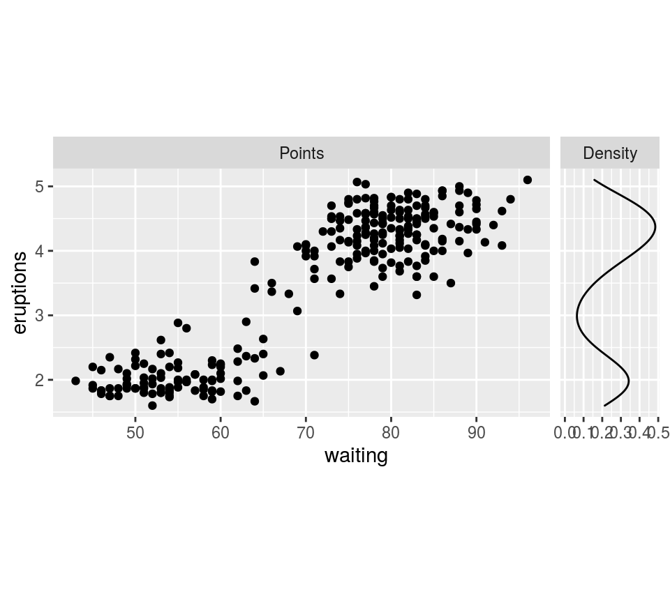
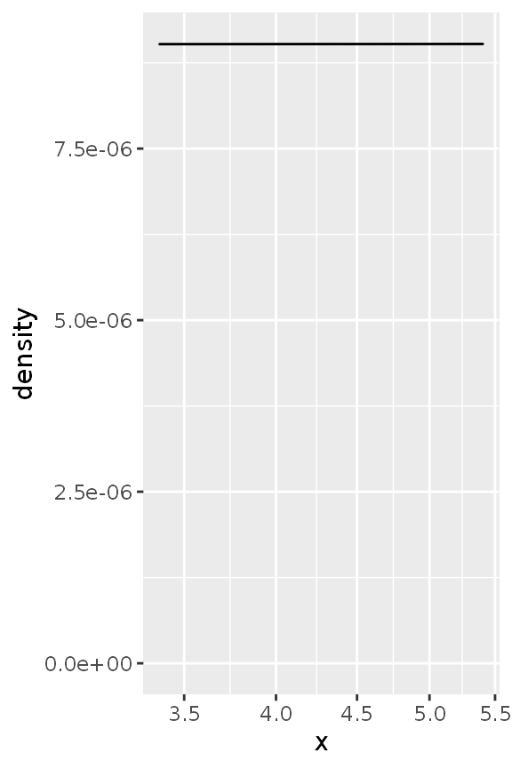
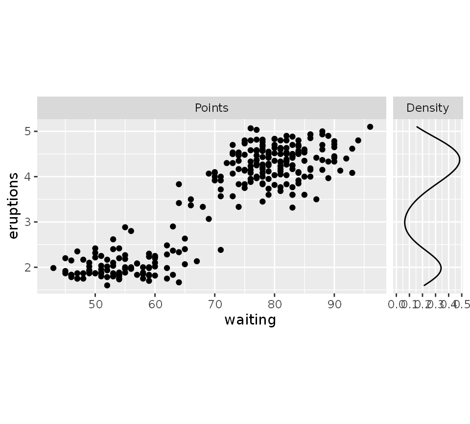
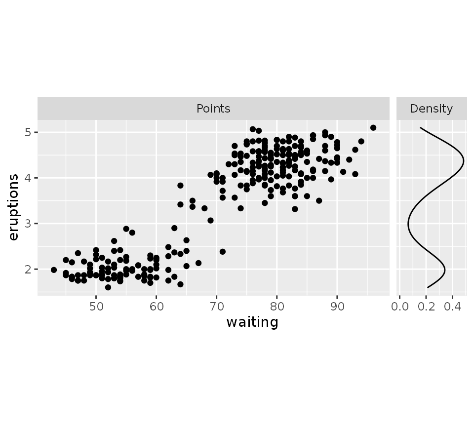

The ggh4x package has some extended options for tweaking the appearance of facets.
Perhaps this package might be best known for generating nested facets; wherein outer strips can span inner strips if they belong the the same category. This can be especially useful if there is some hierarchical relations to the facets.
In the example below, we’ll categorise the Iris species for having long or short leaves.
df <- cbind(
iris,
Nester = ifelse(iris$Species == "setosa", "Short Leaves", "Long Leaves")
)
ggplot(df, aes(Sepal.Width, Sepal.Length)) +
geom_point() +
facet_nested(~ Nester + Species)
If you prefer your strips to have blank backgrounds, you could still indicate the hierarchical nature by setting nest_line = TRUE. The appearance of the line is controlled by the theme element ggh4x.facet.nestline.
ggplot(df, aes(Sepal.Width, Sepal.Length)) +
geom_point() +
facet_nested(~ Nester + Species, nest_line = TRUE) +
theme(strip.background = element_blank(),
ggh4x.facet.nestline = element_line(colour = "blue"))
While facet_nested() is based on facet_grid(), there are a few differences. Notably, facet_nested() doesn’t require input data to have all the facet variables. In the example below, we remove the Species column, to prevent facetting on that variable. Note that if we didn’t specify a new Nester variable, it would put the second set of points in all panels, just like facet_grid().
Furthermore, when strips are placed at the bottom, it rearranges the strips so that the inner strips are closest to the panels and spanning strips are furthest from the panel.
ggplot(df, aes(Sepal.Width, Sepal.Length)) +
geom_point() +
geom_point(data = transform(iris, Species = NULL, Nester = "All")) +
facet_nested(~ Nester + Species, switch = "x")
A similar variant exists for wrapping in facets. It can span the strips for every strip.position argument, and has a few nifty tricks for duplicating axes or just axis ticks. To explain the bleed argument, take a look at the lower left, where the lower “f” strips are merged, even though the strips on top are in different categories.
ggplot(mpg, aes(displ, hwy)) +
geom_point() +
facet_nested_wrap(vars(cyl, drv), dir = "v",
strip.position = "left",
axes = "full",
remove_labels = "rows",
bleed = TRUE)
A second thing we might want to tweak about facets is the exact specifications of each facet’s position scale. To set the scales individually, we can use facetted_pos_scales() in combination with a list of scales. This way, you can vary labels, breaks, limits, transformations and even axis guides for each panel individually.
The list of scales follows the order of the facets, as long as they are set to ‘free’. Tweaking the position scales works with many types of facets, such as wrap, grid and nested, but has to be called after facets are added.
scales <- list(
scale_x_reverse(),
scale_x_continuous(labels = scales::dollar,
minor_breaks = c(2.5, 4.5)),
scale_x_continuous(breaks = c(2.945, 6),
limits = c(0, 10),
guide = "axis_minor")
)
ggplot(mpg, aes(displ, hwy)) +
geom_point() +
facet_wrap(vars(drv), scales = "free_x") +
facetted_pos_scales(x = scales)
This works because facetted_pos_scales() makes an edit to the facet, which comes with an important limitation. Due to the way plots are build and where facets are involved, scale transformations are applied after calculations in the stat part of the layer. This differs from normal behaviour, where scale transformations are applied before stat calculations. Therefore, it is recommended to pre-transform the data in layers with non-identity statistics in the aes() mapping. An example of what could go wrong is shown below.
set.seed(0)
df <- data.frame(
x = rlnorm(100, 10)
)
# Normally data is transformed prior to stat calculations
ggplot(df, aes(x)) +
geom_density() +
scale_x_log10()
# This can give problems when combining stat calculations with facetted
# position scale transformations.
ggplot(df, aes(x)) +
geom_density() +
facetted_pos_scales(x = list(scale_x_log10()))
If you plan on using facetted_pos_scales() to tweak the axis of the plots, do take a look at the position guides!
Lastly, we can also set the sizes of the panels to what we want. This can be especially convenient when you want different sizes for facets, for example when you want to add a density next to your plot. The function force_panelsizes() can let you set relative or absolute sizes for the rows and columns.
The settings overrule the coordinates’ or theme’s aspect ratio and space = "free" facet arguments. By default, rows and columns are set relative within themselves only. When respect = TRUE, the rows and columns relative units become also relative between rows and columns, as you can see in the plot below. Alternatively, you can set them as absolute units with the grid::unit() function. Again, these need to be added after any facets.
g <- ggplot(faithful) +
geom_point(aes(waiting, eruptions),
data = cbind(faithful, facet = "Points")) +
geom_density(aes(y = eruptions),
data = cbind(faithful, facet = "Density")) +
facet_grid(~ facet, scales = "free_x") +
force_panelsizes(cols = c(1, 0.2),
rows = c(0.5),
respect = TRUE)
g
If you think the breaks of the density plot above are too packed, why not tweak these with facetted_pos_scales()? Note that NULL signals here that the default scale should be used.
g + facetted_pos_scales(x = list(NULL, scale_x_continuous(breaks = c(0, 0.2, 0.4))))